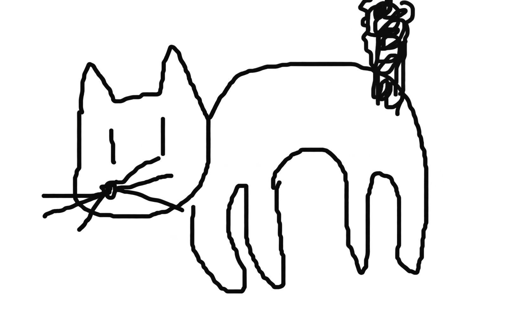
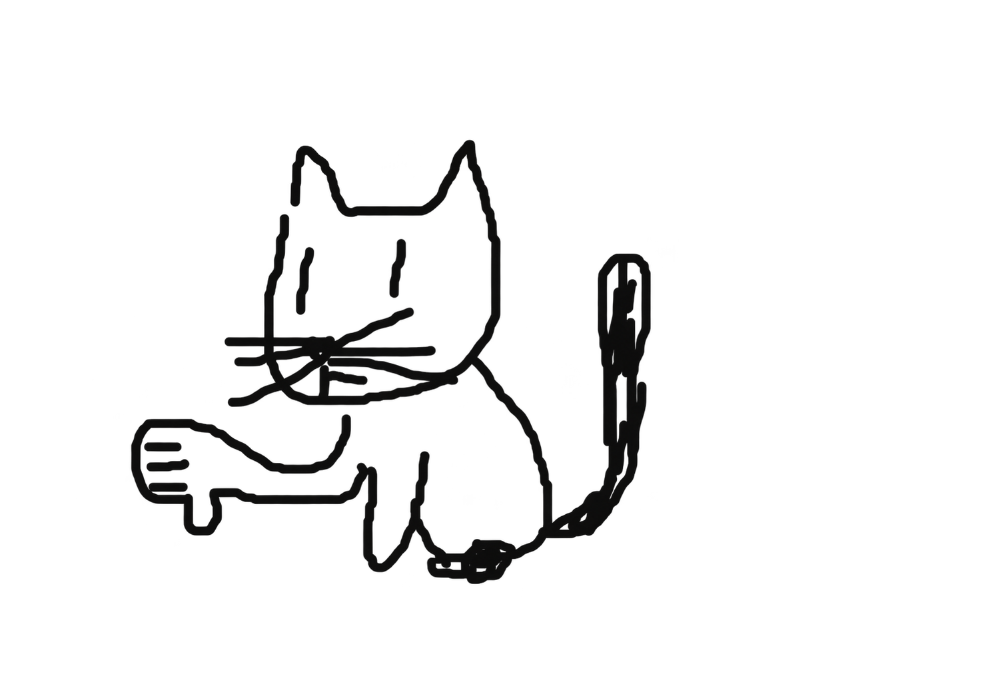
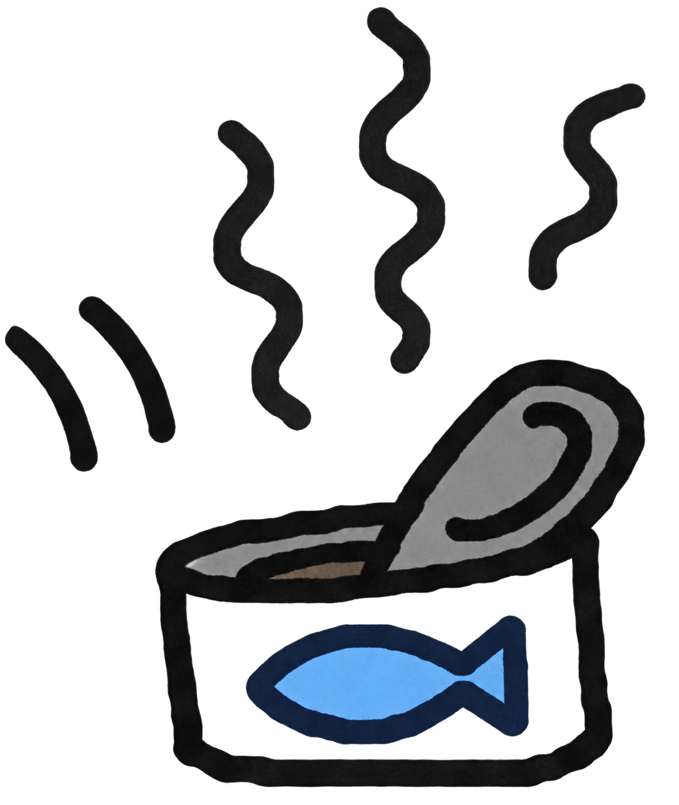

R.I.P. My wired earphones. ×2..........
He absolutely loves lying around in the bathroom and staring blankly at the drain. Especially when the faucet is running. .....

He loves chicken-flavored cat food. But he really hates food with a strong fishy smell. I've bought him tuna-flavored canned food twice, and he wouldn't even take a single bite. He even tried to bury it, just like he does with his poop. Maybe it's because his owner doesn't like tuna either.
Tuna cans wasted ×2 My money... ㅠㅠㅠ

He eats a lot.
When he first came home, he was really skinny. But he's always been very enthusiastic about mealtime. He eats more than most kittens his age. However, when it comes to food he doesn't like, he barely eats anything. He doesn't like freeze-dried treats, either. And he's not the type to easily try foods he's never had before. He's a little kitten who knows exactly what he likes and dislikes. If he likes something, he likes it. If he doesn't, he doesn't.
When I’m watching TV.
His poop is... a little stinky.
a little ....
Banana Sleeping Position...
NO NO NO.
NO NO NO..
☹☻
His bed = My pillow = My gaming chair
When he’s bored.